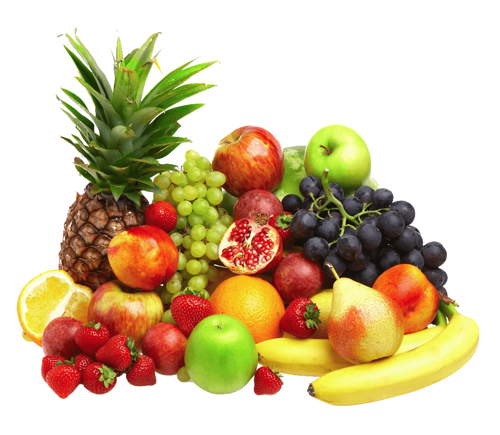
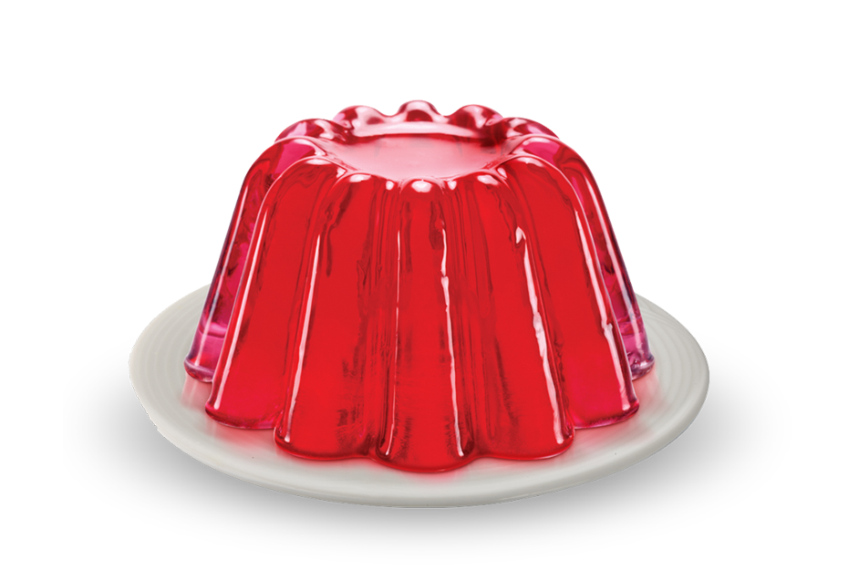

<ion-view view-title="Tabla Nutricional">
  <ion-content class="nutri">
   <h1>Guias Nutricionales </h1>
   <div class="ion-content ">
     <div class="row r1">
      <div class="col">DESAYUNO</div>
     </div>
     <div class="row">
      <div class="col c1">
        -Café con leche, tostada de pan integral con tomate y aceite de oliva, y una pera. <br><br>
      -Cuajada con miel y nueces, pan de cereales con paté de garbanzos y compota de manzana. <br><br>
      -Infusión, palitos de pan con taquitos de queso y dulce de membrillo, y un plátano. <br><br>
      -Café con leche, minibaguetina de calabacín plancha, y fiambre de pavo y naranja. <br><br>
      -Queso fresco con cereales integrales de desayuno y con fresas y moras. <br><br>
      -Leche con achicoria, barritas de cereales integrales con frutos secos, y melón con jamón. <br><br>
      -Yogur natural sin azucarar o kéfir con trocitos de fruta y frutos secos (pasas, nueces…).
    </div>
      <div class="tabla">
        <br>
        <br>
        <br>
        <br>
      </div>
     </div>
   </div><br>

   <div class="ion-content ">
     <div class="row r1">
      <div class="col">REFACCIÓN 1</div>
     </div>
     <div class="row">
      <div class="col c1">
        -Energéticos (fuente de carbohidratos): pan, galletas, avena, incaparina, tortilla, granola, cereales. <br><br>
      -Constructores (fuente de proteínas): Leche, quesos, yogurt, huevo, jamón, carnes. <br><br>
      -Protectores (fuentes de Vitaminas y minerales): Frutas, verduras o hierbas. <br><br>
      -Incluir siempre la mezcla de todos los grupos de alimentos (frutas, cereales, yogurt, etc.)<br><br>
      -Evitar los excesos y la alta frecuencia de alimentos como: chucherías, aguas gaseosas, jugos comerciales. <br> <br>
      -Invertir en recipientes que garanticen que no se derramarán, para poder optar a mandar frescos o jugos naturales en lugar de jugos comerciales o gaseosa. <br>
    </div>
      <div class="tabla">
        <br>
        <br>
        <br>
        <br>
      </div>
     </div>
   </div><br>

   <div class="ion-content ">
     <div class="row r1">
      <div class="col">ALMUERZO</div>
     </div>
     <div class="row">
      <div class="col c1">
        -Sopa de Fideos <br>
      -Zapalitos rellenos <br>
      -con queso blanco<br>
      -Souflé de <br>
      -Zanahorias<br>
      -Sopa con <br>
      -huevo<br>
      -Tortilla de Acelga<br>
      -con queso fresco<br>
      -Tarta de berenjenas<br>
      -Sopa cabello de angel<br>
      -Guiso de arroz con carne y vegetales<br>
      -Tallarines con<br>
      -salsa bolognesa<br>
      -Pescado con <br>
      -ensalada mixta<br>
      -Pescado asado <br>
      -con espinacas<br>
      -Carne al horno con zanahoria rallada<br>
      -Albóndigas <br>
      -con ensalada<br>
      -Pastas con salsa mixta<br>
    </div>
      <div class="tabla">
        <br>
        <br>
        <br>
        <br>
      </div>
     </div>
   </div><br>

   <div class="ion-content ">
     <div class="row r1">
      <div class="col">REFACCIÓN 2</div>
     </div>
     <div class="row">
      <div class="col c1">
        -Merienda 1:<br>
      2 tortillas pequeñas
      1 tajada de queso amarillo
      1 tajada mediana de jamón de pavo
      Total de calorías: 230 <br><br>
      
      -Merienda 2:<br>
      4 galletas de vainilla
      1 manzana pequeña
      Total de calorías: 160 <br><br>
      
      -Merienda 3:<br>
      1 taza de ensalada de frutas
      3 galletas corazones de hojaldre
      Total de calorías: 170 <br><br>
      
      -Merienda 4:<br>
      1 taza de refresco natural de frutas sin azúcar o endulzado con sustituto de azúcar
      Sándwich de queso preparado con:2 rebanadas de pan cuadrado integral,1 tajada mediana de queso blanco,1 cucharada de salsa de tomate,½ taza de lechuga, 2 rodajas de tomate.
      Total de calorías: 250 <br><br>
    </div>
      <div class="tabla">
        <br>
        <br>
        <br>
        <br>
      </div>
     </div>
   </div><br>

   <div class="ion-content ">
     <div class="row r1">
      <div class="col">CENA</div>
     </div>
     <div class="row">
      <div class="col c1">
        -Sopa de Avena <br>
      -Sopa de Semola<br>
      -Tarta de Zapallitos<br>
      -Sopa crema de zapallo<br>
      -Tortilla de Acelga <br>
      -con queso fresco<br>
      -Sopa de <br>
      -Verduras<br>
      -Tarta de Zapallitos<br>
      -Plato Principal<br>
      -Filet de pescado con puré de zapallo<br>
      -Pollo al horno con budín o puré<br>
      -Carne al horno con budín de vegetales a elección<br>
      -Pastel de Carne con queso fresco y huevo<br>
      -Pollo al horno <br>
      -con calabazas<br>
      -Carne con ensalada de tomates<br>
      -Carne asada con puré<br>
      -Postre<br>
      -gelatina<br>
      -Fruta a elección<br>
      -Fruta a elección<br>
      -Manzana rallada con jugo de naranja<br>
      -budin de pan<br>
      -Fruta a elección<br>
      -Flan<br>
    </div>
      <div class="tabla">
        <br>
        <br>
        <br>
        <br>
      </div>
     </div>